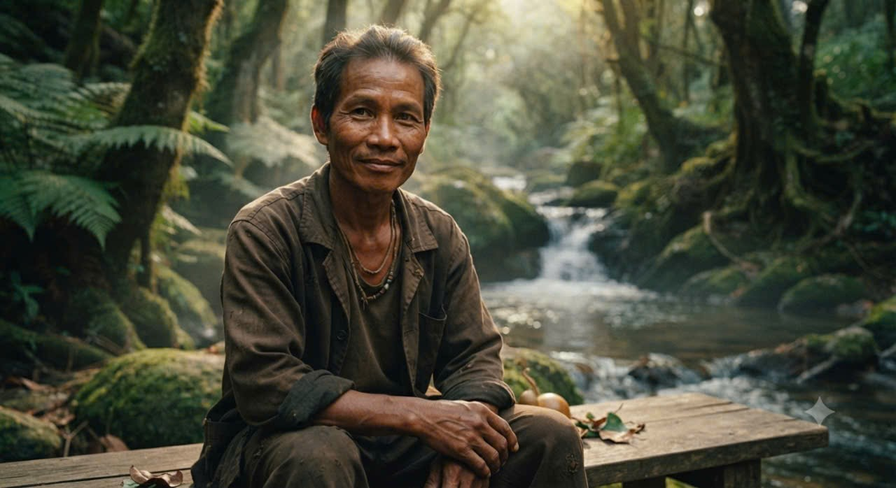

Người Yi là một nhóm sinh vật có tổ tiên là người Ye nhưng đã lai tạo nhiều đời với nhân loại, chúng sống rải rác khắp nơi trên thế giới, chúng thừa hưởng bản tính bá dơ của người Ye và trí thông minh của người thường. Nơi sinh sống: ở mỗi nơi chúng đi qua, chúng sẽ nuôi trồng những khu rừng cau để tích trữ vũ khí. Ngoại hình: chúng có nhân dạng y như đúc khi so với loài người, nhưng lại sở hữu một cái lưỡi dài như con rắn và đầu lưỡi được tách làm hai.

Người Ye là một nhóm sinh vật sống chủ yếu ở khu vực trung tâm trái đất rỗng, vô tình được 4 nhà khoa học tại viện nghiên cứu hạng tư phát hiện. Người Ye có nhiều điểm tương đồng với người Um nhưng họ rất nứng và có ham muốn tình dục mãnh liệt, họ có thể sử dụng tuyến nước bọt làm vũ khí hoặc kèm theo trái cây. Mới đây các nhà khoa học đã phát hiện sử dụng cau làm đạn pháo của một cá thể người Ye đã hòa nhập với loài người.